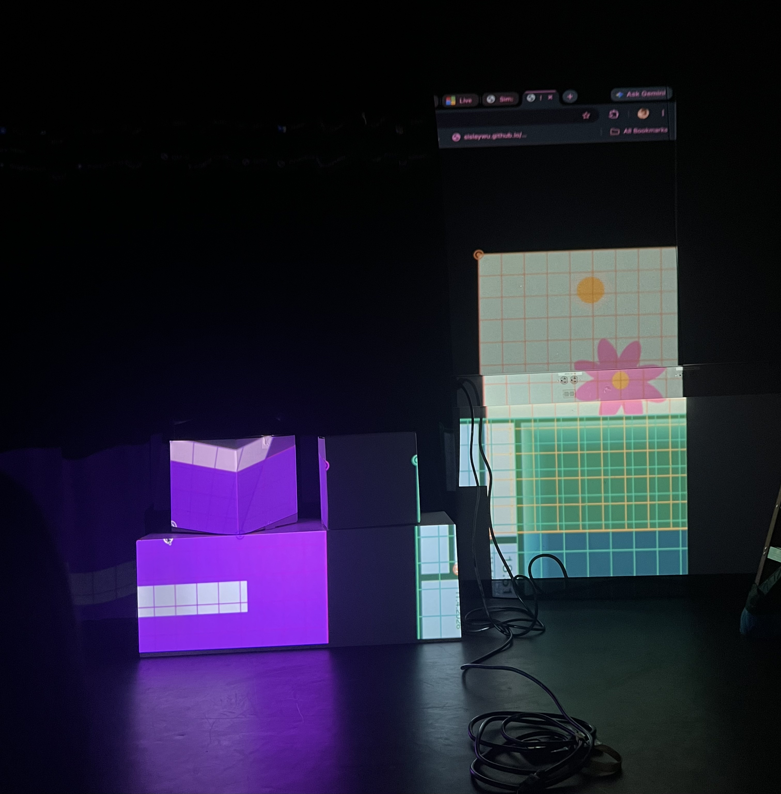
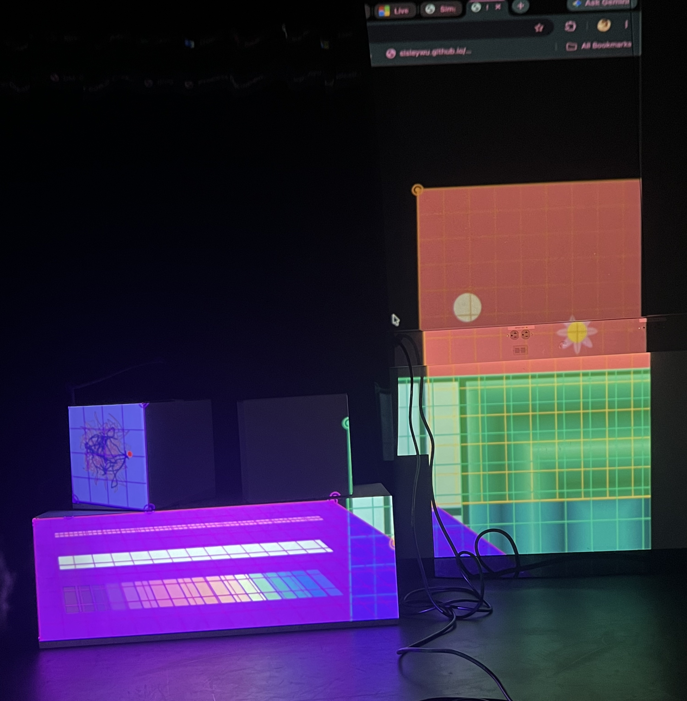
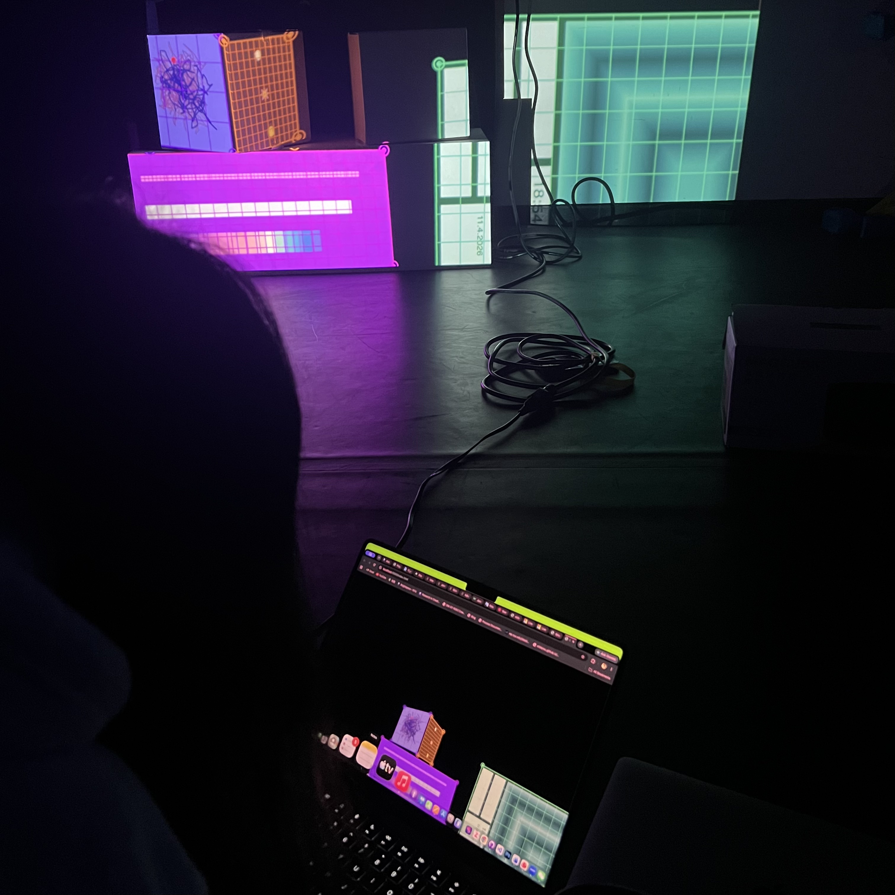
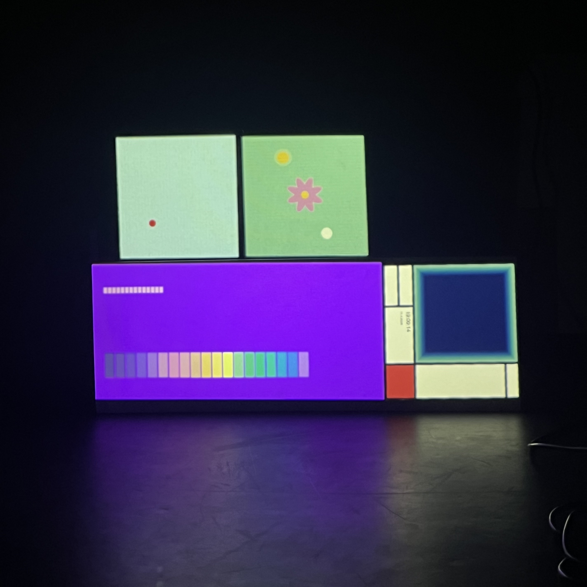
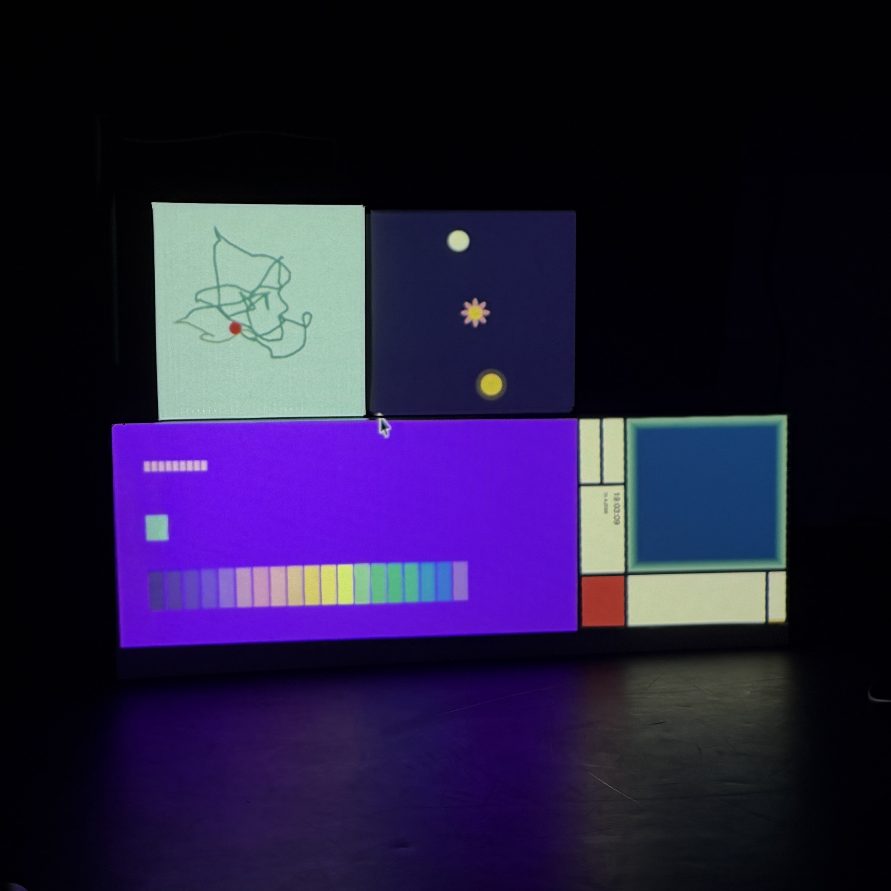
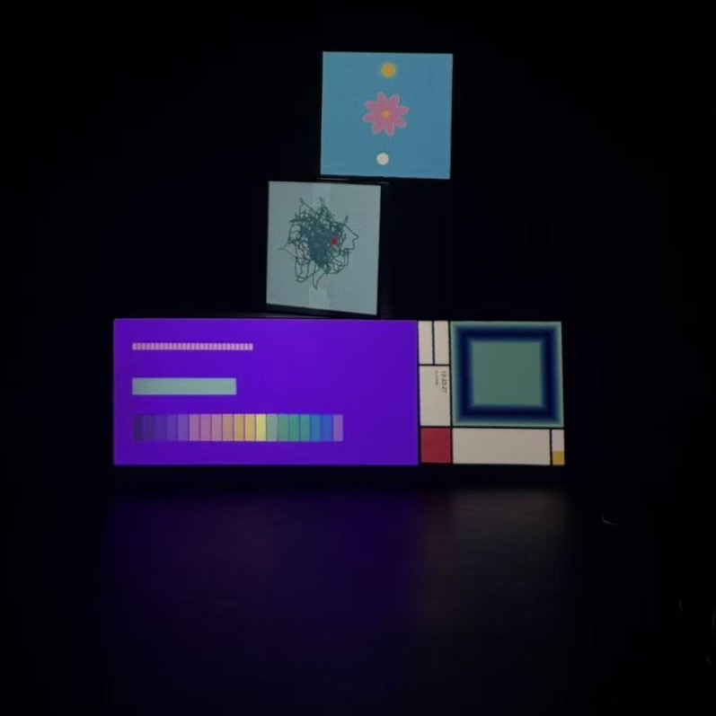

For the projection mapping project, we had our experiences in a different classroom. During our first session, it was exciting to see our digital sketches move beyond the laptop screen and become part of a physical space. However, we also experienced several technical problems. Some parts of the artwork were cropped because the projected image was larger than the available surface. Combining everyone’s code was also more difficult than I expected because different group members used different settings. For example, colorMode() changed how some colors appeared, while angleMode(DEGREES) affected sketches that were originally created with different angle settings. This made me realize that even when each sketch works correctly by itself, conflicts can happen when several projects are combined. During our second session, the setup went much more smoothly because we already understood what had caused the earlier problems. I discovered that the size of the pg canvas did not match the 800 × 450 projection surface, so I used pg.scale() to resize the content and solve the cropping issue. After making this adjustment, the artwork fit the surface much better, and the different sketches worked together more successfully. I was happy with the final result, especially because the projection looked very different and more immersive at a large scale. We also took photos to document the finished work. Overall, this project taught me that projection mapping involves not only creating visuals, but also carefully testing scale, space, shared code settings, and how the work appears in the actual environment.





